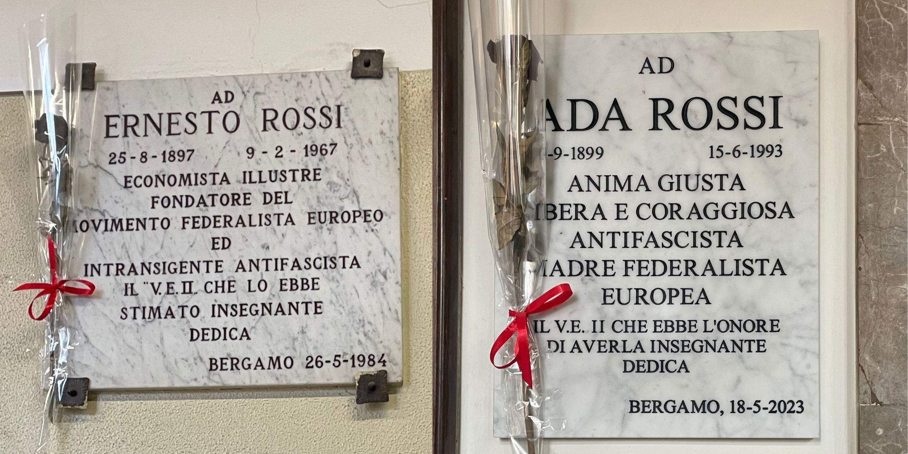

Historical Context
We are standing in front of the historic headquarters of the Vittorio Emanuele II Technical Institute. During the Fascist twenty-year period, this building was not only a place of education, but also a center of surveillance and control. The most radical transformation occurred during the Nazi occupation (1943–1945): the building was requisitioned by the Germans and turned into a strategic military headquarters. Due to the occupation, teaching activities were interrupted and the school was forced to relocate elsewhere, leaving these classrooms in the hands of military commands until the Liberation.
🎧 Audio narration
Why it is a place of memory
Ernesto Rossi turned his economics classroom at Vittorio Emanuele into a political trench. A leader of the Justice and Freedom movement, he used Bergamo as a key hub to connect the internal resistance with that in exile. He paid for this courage with his arrest in 1930 and thirteen years of imprisonment, during which he helped write the Ventotene Manifesto for a united Europe. Ada Rossi, a scientist and deeply independent woman, was the backbone of civil resistance in the city. Dismissed by the regime, she never stopped fighting: through her private lessons, she shaped the democratic conscience of dozens of young people from Bergamo, laying the foundations for the future local Resistance. It was she, as a silent courier, who smuggled out of confinement the texts that would lay the foundations of European identity. Despite this, only in 2023 was a plaque placed in her honor outside the institute’s main hall. Together, Ernesto and Ada demonstrated that freedom must be defended both through political action and through the education of the younger generations.
🎧 Audio narration
Multimedia Content


Ernesto Rossi commemorates Gaetano Salvemini, teacher and friend
In-depth: The Ventotene Manifesto
The Ventotene Manifesto is a political document written in 1941 by Ernesto Rossi and Altiero Spinelli, with contributions from Eugenio Colorni, during their confinement on the island of Ventotene in World War II. It represents one of the fundamental texts of European federalist thought. The authors identified nationalism and the absolute sovereignty of states as the main causes of the wars that devastated Europe. For this reason, they proposed overcoming the traditional nation-state and building a European Federation, equipped with common institutions—such as a government and a parliament—with real decision-making powers. The Manifesto also establishes the need for deep economic integration, based on a single market, shared resources, and common policies in production and social fields, aimed at reducing inequalities and ensuring dignified living conditions. Particular attention is given to social justice, workers’ protection, and the promotion of rights. The Ventotene Manifesto influenced the process of European integration, inspiring the creation of the first community institutions, such as the ECSC and the EEC. The ultimate goal of the project is the achievement of stable and lasting peace: a politically and economically united Europe would make new conflicts among European peoples impossible.
🎧 Audio narration
Sources
Bibliographic Sources
- Mario Pelliccioli, Memory Routes. A path in Bergamo through fascism, German occupation and Resistance, Moltefedi Achille Grandi Editore, Bergamo 2023
- European University Institute - Historical Archives of the European Union (translation by Antonella Braga and Simonetta Michelotti), Inventory of the Ernesto Rossi Fund, Ernesto Rossi and Gaetano Salvemini Foundation, Florence 2008
- Publius, The Ventotene Manifesto turns 80 and inspires the builders of Europe, L’Unità Europea, 2021.
Multimedia Sources
- Image 1: from Profile of Ada Rossi, curated by the Rossi Salvemini Foundation
- Images 2 and 3: Project photo archive, class 5IG Itis P. Paleocapa
- Video: The Ventotene Manifesto, the European dream of Altiero Spinelli and Ernesto Rossi
- Audio: Radio Radicale, Ernesto Rossi commemorates Gaetano Salvemini, teacher and friend, Rome, December 11, 1966.